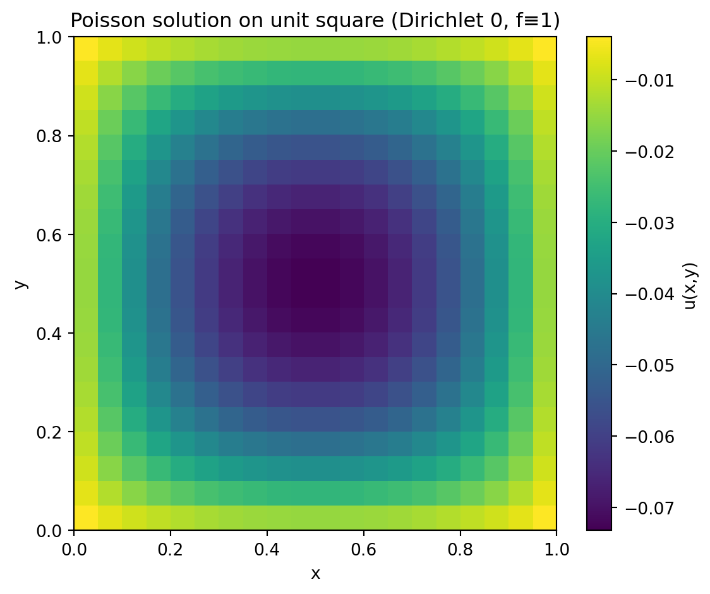
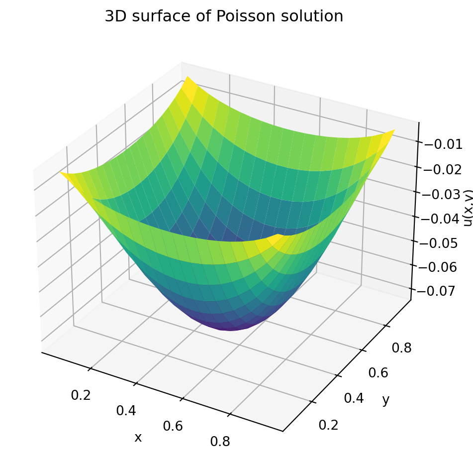

Pavni: We’ve seen waves (hyperbolic) and diffusion (parabolic). What are elliptic PDEs about?
Acharya: Elliptic PDEs describe steady-state or equilibrium phenomena where time is no longer present. Typical examples are steady heat conduction, electrostatics (potential problems), and incompressible potential flow.
Pavni: So instead of marching forward in time we solve for the entire spatial field at once?
Acharya: Exactly. That changes both our modelling viewpoint and the numerical tools: we discretize the spatial domain and solve a (usually large) algebraic system.
8.1 Prototypical equations
The two classical elliptic equations in two dimensions are
Laplace equation (no sources):
\[
u_{xx} + u_{yy} = 0,
\]
Poisson equation (with sources):
\[
u_{xx} + u_{yy} = f(x,y).
\]
Boundary conditions determine a well-posed problem (Dirichlet, Neumann, Robin).
A second-order linear PDE in 2D written as
\[
A u_{xx} + 2B u_{xy} + C u_{yy} + \dots = 0
\]
is elliptic at a point if the discriminant satisfies
\[
B^2 - AC < 0.
\]
This local condition corresponds to the absence of real characteristic curves — there is no natural direction for propagation.
8.2 Boundary conditions
Dirichlet: prescribe \(u\) on the boundary (value-driven).
Neumann: prescribe normal derivative \(\partial_n u\) on the boundary (flux-driven).
Robin: linear combination of Dirichlet and Neumann.
Pavni: Which ones are easiest numerically?
Acharya: Dirichlet is simplest to impose in most finite-difference or finite-element contexts. Neumann requires consistent discretizations near the boundary (ghost points or one-sided differences).
8.3 Finite difference discretization — Laplace on a square
We illustrate with the unit square \(\Omega = (0,1)^2\) and Dirichlet boundary conditions.
Use a uniform grid with spacing \(h=1/(N+1)\) and interior nodes \((x_i,y_j)\) where \(i,j=1,\dots,N\).
Central differences give the five-point stencil at interior node \((i,j)\):
This couples each grid point to its four neighbours.
Pavni: Wait, what happens along the edges of the square? We’re only writing difference equations for the interior nodes.
Acharya: Good observation. On the boundaries, we must specify boundary conditions to make the problem well posed.
In this example, we assume homogeneous Dirichlet conditions, meaning \[
u(x,y) = 0 \quad \text{for } (x,y) \text{ on the boundary of } \Omega = (0,1)^2.
\]
That’s like a square metal plate whose edges are held at zero temperature while heat is generated inside.
Pavni: So the temperature is fixed to zero all around, and the source term (f(x,y)=1) keeps the interior warm?
Acharya: Exactly. Numerically, we handle this by solving only for the interior grid points.
The grid spacing is (h = 1/(N+1)), so the first and last rows/columns correspond to the boundary, where (u=0).
We don’t include those nodes in our system — the matrix (A) acts only on interior unknowns, which implicitly enforces (u=0) on the edges.
Pavni: That makes sense — so every (u_{i,j}) we compute corresponds to an interior temperature, with the boundaries fixed to zero.
8.4 Matrix form and properties
Ordering unknowns lexicographically (e.g. row-wise), the discrete Laplacian leads to a linear system
\[
A \mathbf{u} = \mathbf{b}.
\]
Key properties of the matrix \(A\) for the standard five-point Laplacian with Dirichlet BCs:
symmetric
sparse (banded block structure)
positive-definite (for Poisson with Dirichlet BCs)
These properties guide solver choices — conjugate gradient (CG) is an excellent option when \(A\) is SPD.
8.5 Simple solvers (algorithmic sketch)
Pavni: Which solver should I try first?
Acharya: Start with iterative smoothers and then try Krylov methods:
Jacobi (easy, textbook): parallel-friendly but slow.
Conjugate Gradient with an incomplete Cholesky or algebraic multigrid preconditioner for large problems.
8.6 Example: Python — assemble and solve small Poisson
Show solver code
import numpy as npimport matplotlib.pyplot as pltfrom scipy.sparse import diagsfrom scipy.sparse.linalg import spsolve# small example N x N interior pointsN =20h =1.0/(N+1)# 1D Laplacian blockT = diags([1,-2,1], [-1,0,1], shape=(N,N)).toarray()I = np.eye(N)A = (np.kron(I, T) + np.kron(T, I)) / h**2# RHS f(x,y) = 1.0b = np.ones(N*N)# Solve (for small N we use direct)u = np.linalg.solve(A, b)# reshape to 2D for plotting or inspectionU = u.reshape((N,N))# Build coordinates for plottingx = np.linspace(h, 1- h, N)y = np.linspace(h, 1- h, N)# --- 2D heatmapplt.figure(figsize=(6,5))plt.imshow(U, origin="lower", extent=[0, 1, 0, 1], aspect="auto")plt.colorbar(label="u(x,y)")plt.title("Poisson solution on unit square (Dirichlet 0, f≡1)")plt.xlabel("x"); plt.ylabel("y"); plt.tight_layout()plt.show()# --- 3D surfacefrom mpl_toolkits.mplot3d import Axes3DX, Y = np.meshgrid(x, y)fig = plt.figure(figsize=(6,5))ax = fig.add_subplot(111, projection='3d')ax.plot_surface(X, Y, U, cmap='viridis')ax.set_title('3D surface of Poisson solution')ax.set_xlabel('x'); ax.set_ylabel('y'); ax.set_zlabel('u(x,y)')plt.tight_layout()plt.show()

Poisson solution on unit square (Dirichlet 0, f≡1) and its 3D surface.

8.7 Interpreting the results
8.8 Interpreting the results
Pavni: The plots look interesting — the surface dips down in the middle instead of forming a hill.
Why is that happening?
Acharya: Good observation! For our problem,
\[
u_{xx} + u_{yy} = 1, \quad u = 0 \ \text{on the boundary},
\]
the Laplacian of \[u\] is positive, which means \[u\] must be concave upward.
So the solution forms a bowl-shaped surface — lowest at the center and rising smoothly to zero along the edges.
Pavni: So the interior is cooler, and the edges are hotter?
Acharya: Not quite. Remember, the boundary is fixed at zero temperature.
The “depth” of the bowl means that \[u\] itself takes negative values inside the domain —
the diffusion operator is balancing a positive source term by lowering \[u\] below zero so that its curvature matches the source.
If you flipped the sign of \[f(x,y)\] to \[-1\], you’d get the opposite: a hill-shaped surface with a positive peak at the center.
Pavni: Oh, so the sign of the source term determines whether the solution curves up or down?
Acharya: Exactly.
A positive source term with zero Dirichlet boundaries gives a concave-up “bowl,”
while a negative source gives a concave-down “hill.”
The Laplacian enforces this curvature so that the spatial average of \[u\] compensates for the forcing.
Pavni: That’s quite elegant — the geometry of the plot directly shows the sign and balance of the PDE.
Acharya: Precisely. Always interpret the numerical solution by checking:
1. The sign of the source term \[f\],
2. The type of boundary condition, and
3. The shape (concavity) that satisfies the diffusion balance. ## Exercises — Exploring the effect of sources and boundary conditions
Pavni: These plots are quite revealing. What if we change the boundary conditions or the source term?
Acharya: Excellent question! Try modifying the code and observe how the steady-state solution responds.
Here are some guided experiments:
Non-homogeneous Dirichlet boundary:
Keep \[f(x,y)=1\] but set \[u=100\] on the left edge (\(x=0\)) and \[u=0\] elsewhere.
→ Observe how the temperature gradient forms from left to right.
Varying the internal heat source:
Replace
f = np.ones((N, N))
Source Code
---title: "Elliptic Partial Differential Equations"format: htmljupyter: python3---**Pavni:** We’ve seen waves (hyperbolic) and diffusion (parabolic). What are elliptic PDEs about?**Acharya:** Elliptic PDEs describe *steady-state* or equilibrium phenomena where time is no longer present. Typical examples are steady heat conduction, electrostatics (potential problems), and incompressible potential flow.**Pavni:** So instead of marching forward in time we solve for the entire spatial field at once?**Acharya:** Exactly. That changes both our modelling viewpoint and the numerical tools: we discretize the spatial domain and solve a (usually large) algebraic system.## Prototypical equationsThe two classical elliptic equations in two dimensions are- **Laplace equation** (no sources): $$ u_{xx} + u_{yy} = 0, $$- **Poisson equation** (with sources): $$ u_{xx} + u_{yy} = f(x,y). $$Boundary conditions determine a well-posed problem (Dirichlet, Neumann, Robin).A second-order linear PDE in 2D written as$$A u_{xx} + 2B u_{xy} + C u_{yy} + \dots = 0$$is **elliptic** at a point if the discriminant satisfies$$B^2 - AC < 0.$$This local condition corresponds to the absence of real characteristic curves — there is no natural direction for propagation.## Boundary conditions- **Dirichlet:** prescribe $u$ on the boundary (value-driven). - **Neumann:** prescribe normal derivative $\partial_n u$ on the boundary (flux-driven). - **Robin:** linear combination of Dirichlet and Neumann.**Pavni:** Which ones are easiest numerically?**Acharya:** Dirichlet is simplest to impose in most finite-difference or finite-element contexts. Neumann requires consistent discretizations near the boundary (ghost points or one-sided differences).## Finite difference discretization — Laplace on a squareWe illustrate with the unit square $\Omega = (0,1)^2$ and Dirichlet boundary conditions.Use a uniform grid with spacing $h=1/(N+1)$ and interior nodes $(x_i,y_j)$ where $i,j=1,\dots,N$.Central differences give the five-point stencil at interior node $(i,j)$:$$\frac{u_{i-1,j} - 2u_{i,j} + u_{i+1,j}}{h^2} + \frac{u_{i,j-1} - 2u_{i,j} + u_{i,j+1}}{h^2} = f_{i,j}.$$Rearrange to the canonical form:$$- u_{i-1,j} - u_{i+1,j} - u_{i,j-1} - u_{i,j+1} + 4 u_{i,j} = h^2 f_{i,j}.$$This couples each grid point to its four neighbours.---**Pavni:** Wait, what happens along the edges of the square? We’re only writing difference equations for the interior nodes.**Acharya:** Good observation. On the boundaries, we must specify **boundary conditions** to make the problem well posed. In this example, we assume **homogeneous Dirichlet conditions**, meaning$$u(x,y) = 0 \quad \text{for } (x,y) \text{ on the boundary of } \Omega = (0,1)^2.$$That’s like a square metal plate whose edges are held at zero temperature while heat is generated inside. **Pavni:** So the temperature is fixed to zero all around, and the source term \(f(x,y)=1\) keeps the interior warm?**Acharya:** Exactly. Numerically, we handle this by solving only for the **interior grid points**. The grid spacing is \(h = 1/(N+1)\), so the first and last rows/columns correspond to the boundary, where \(u=0\). We don’t include those nodes in our system — the matrix \(A\) acts only on interior unknowns, which implicitly enforces \(u=0\) on the edges.**Pavni:** That makes sense — so every \(u_{i,j}\) we compute corresponds to an interior temperature, with the boundaries fixed to zero.---## Matrix form and propertiesOrdering unknowns lexicographically (e.g. row-wise), the discrete Laplacian leads to a linear system$$A \mathbf{u} = \mathbf{b}.$$Key properties of the matrix $A$ for the standard five-point Laplacian with Dirichlet BCs:- symmetric - sparse (banded block structure) - positive-definite (for Poisson with Dirichlet BCs)These properties guide solver choices — conjugate gradient (CG) is an excellent option when $A$ is SPD.## Simple solvers (algorithmic sketch)**Pavni:** Which solver should I try first?**Acharya:** Start with iterative smoothers and then try Krylov methods:- **Jacobi** (easy, textbook): parallel-friendly but slow. - **Gauss–Seidel** (faster; sequential). - **Successive Over-Relaxation (SOR)** (tune relaxation parameter $\omega$). - **Conjugate Gradient** with an incomplete Cholesky or algebraic multigrid preconditioner for large problems.## Example: Python — assemble and solve small Poisson```{python}#| code-fold: true#| code-summary: "Show solver code"#| fig-cap: "Poisson solution on unit square (Dirichlet 0, f≡1) and its 3D surface."#| warning: false#| message: false#| fig-width: 6#| fig-height: 5import numpy as npimport matplotlib.pyplot as pltfrom scipy.sparse import diagsfrom scipy.sparse.linalg import spsolve# small example N x N interior pointsN =20h =1.0/(N+1)# 1D Laplacian blockT = diags([1,-2,1], [-1,0,1], shape=(N,N)).toarray()I = np.eye(N)A = (np.kron(I, T) + np.kron(T, I)) / h**2# RHS f(x,y) = 1.0b = np.ones(N*N)# Solve (for small N we use direct)u = np.linalg.solve(A, b)# reshape to 2D for plotting or inspectionU = u.reshape((N,N))# Build coordinates for plottingx = np.linspace(h, 1- h, N)y = np.linspace(h, 1- h, N)# --- 2D heatmapplt.figure(figsize=(6,5))plt.imshow(U, origin="lower", extent=[0, 1, 0, 1], aspect="auto")plt.colorbar(label="u(x,y)")plt.title("Poisson solution on unit square (Dirichlet 0, f≡1)")plt.xlabel("x"); plt.ylabel("y"); plt.tight_layout()plt.show()# --- 3D surfacefrom mpl_toolkits.mplot3d import Axes3DX, Y = np.meshgrid(x, y)fig = plt.figure(figsize=(6,5))ax = fig.add_subplot(111, projection='3d')ax.plot_surface(X, Y, U, cmap='viridis')ax.set_title('3D surface of Poisson solution')ax.set_xlabel('x'); ax.set_ylabel('y'); ax.set_zlabel('u(x,y)')plt.tight_layout()plt.show()```## Interpreting the results## Interpreting the results**Pavni:** The plots look interesting — the surface dips down in the middle instead of forming a hill. Why is that happening?**Acharya:** Good observation! For our problem,$$u_{xx} + u_{yy} = 1, \quad u = 0 \ \text{on the boundary},$$the Laplacian of $$u$$ is **positive**, which means $$u$$ must be **concave upward**. So the solution forms a *bowl-shaped surface* — lowest at the center and rising smoothly to zero along the edges.**Pavni:** So the interior is cooler, and the edges are hotter?**Acharya:** Not quite. Remember, the boundary is fixed at zero temperature. The “depth” of the bowl means that $$u$$ itself takes *negative values* inside the domain — the diffusion operator is balancing a positive source term by lowering $$u$$ below zero so that its curvature matches the source. If you flipped the sign of $$f(x,y)$$ to $$-1$$, you’d get the opposite: a *hill-shaped* surface with a positive peak at the center.**Pavni:** Oh, so the sign of the source term determines whether the solution curves up or down?**Acharya:** Exactly. A positive source term with zero Dirichlet boundaries gives a concave-up “bowl,” while a negative source gives a concave-down “hill.” The Laplacian enforces this curvature so that the spatial average of $$u$$ compensates for the forcing.**Pavni:** That’s quite elegant — the geometry of the plot directly shows the sign and balance of the PDE.**Acharya:** Precisely. Always interpret the numerical solution by checking: 1. The **sign** of the source term $$f$$, 2. The **type** of boundary condition, and 3. The **shape** (concavity) that satisfies the diffusion balance.## Exercises — Exploring the effect of sources and boundary conditions**Pavni:** These plots are quite revealing. What if we change the boundary conditions or the source term?**Acharya:** Excellent question! Try modifying the code and observe how the steady-state solution responds. Here are some guided experiments:1. **Non-homogeneous Dirichlet boundary:** Keep $$f(x,y)=1$$ but set $$u=100$$ on the left edge ($x=0$) and $$u=0$$ elsewhere. → *Observe how the temperature gradient forms from left to right.*2. **Varying the internal heat source:** Replace ```python f = np.ones((N, N))```